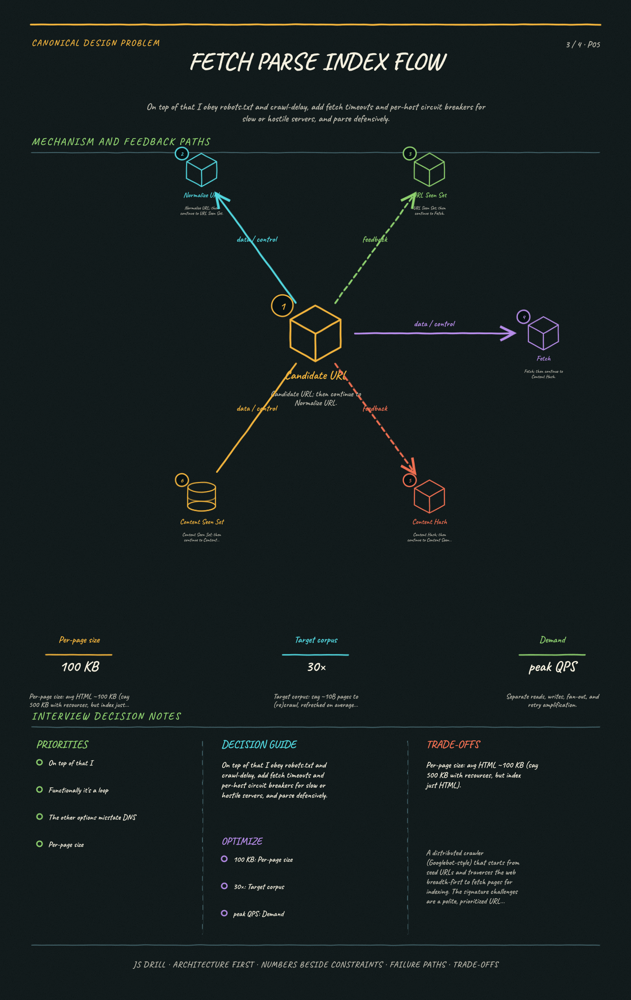

https://frosty110.github.io/js-drill/assets/system-design/infographics/design-problems/p05/fetch-parse-index-flow.pngA distributed crawler (Googlebot-style) that starts from seed URLs and traverses the web breadth-first to fetch pages for indexing. The signature challenges are a polite, prioritized URL frontier, deduplicating both URLs and page content, and staying robust against crawler traps and infinite spaces while re-crawling for freshness.
All questions, model answers and diagrams for Design a Web Crawler →